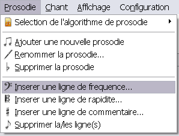
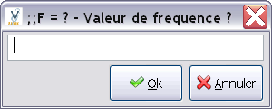

Pour insérer une fréquence dans une prosodie, il faut d'abord sélectionner une ligne d'insertion de la fréquence. Puis, il faut cliquer sur Prosodie > Inserer une ligne de frequence...

Le logiciel vous demande alors la valeur de fréquence à insérer

Si vous cliquez sur Ok la fréquence est insérée.